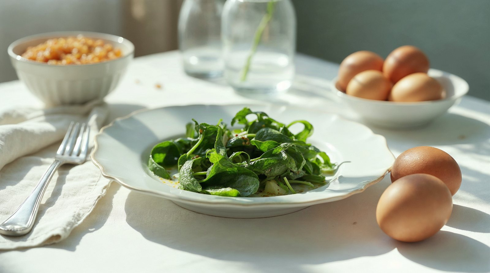
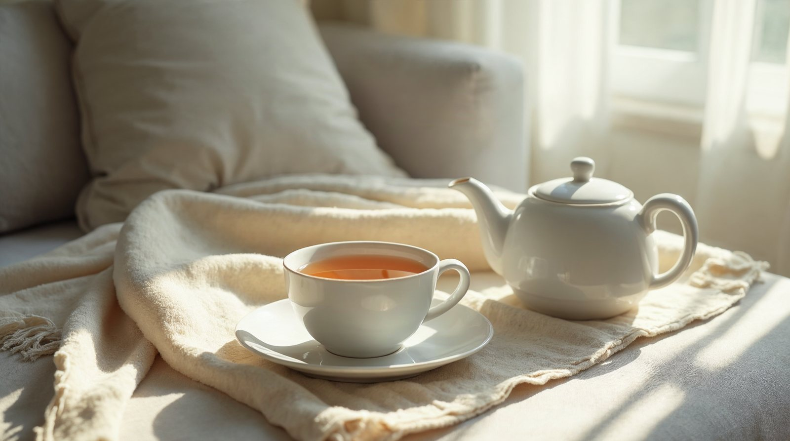
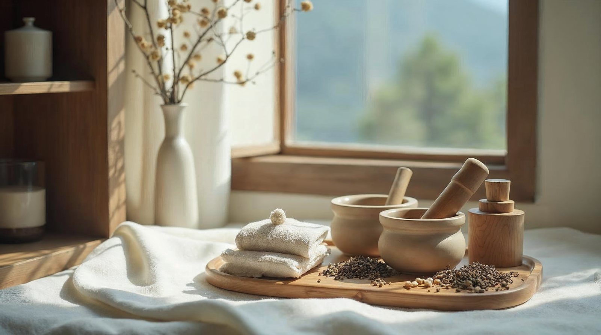

이종호 한의사 감수좋은꿈참사랑한의원 대표원장 (한의사 면허번호 19769)발행 2026-11-26 · 수정 2026-11-26
이 글의 차례
생리 둘째 날 밤, 알람을 맞춰 두고 잡니다. 새벽 세 시쯤 깨서 패드를 갈지 않으면 이불까지 번질까 봐서입니다. 회의 중에도 시계를 보며 언제 화장실에 다녀와야 할지 계산하고, 흰 바지는 옷장 깊숙이 넣어 둔 지 오래입니다. 그런데도 "원래 양이 많은 체질이야" 하며 몇 년째 그냥 지내 오신 분이 많습니다.
생리 양이 지나치게 많은 상태를 월경과다라고 합니다. 한두 시간마다 패드나 탐폰을 갈아야 하는 날이 이어지거나, 엄지손가락 마디보다 큰 핏덩어리가 자주 나오거나, 생리가 7일을 넘겨 이어진다면 한 번은 산부인과에서 원인을 확인받으시길 권합니다. 많은 출혈은 빈혈로 이어지기 쉬워서, 혈액 검사도 함께 받아 보시는 것이 좋습니다.
한의원에서는 산부인과에서 확인한 원인과 빈혈 결과를 바탕으로, 피로와 어지럼, 잠, 소화, 몸의 온도 같은 생활 속 불편을 함께 살핍니다. 원인을 모른 채 한의원 진료만 받는 것은 권하지 않습니다.
진료실에서 "다들 이 정도는 하지 않나요?" 하는 말씀을 자주 듣습니다. 생리 양은 남과 비교해 볼 기회가 거의 없다 보니, 내 양이 많은지조차 모르고 지내기 쉽습니다. 오래 참아 오셨다면 이제는 한 번 확인해 볼 때입니다.
왜 생리 양이 많아질까요
생리 양이 많아지는 원인은 크게 자궁 자체의 변화, 호르몬 리듬의 변화, 피가 멈추는 힘의 문제, 그리고 약의 영향으로 나눠 볼 수 있습니다. 원인에 따라 산부인과의 치료 방향이 달라서, 먼저 어느 쪽인지 아는 것이 중요합니다.
자궁근종, 자궁선근증, 자궁내막 폴립처럼 자궁에 생긴 변화는 생리 양을 늘리는 흔한 원인입니다. 특히 자궁 안쪽으로 튀어나온 근종이나 폴립은 크기가 작아도 출혈을 늘릴 수 있습니다.
배란이 규칙적으로 일어나지 않으면 자궁내막이 고르게 떨어지지 못해, 생리가 늦어졌다가 한꺼번에 많이 나오기도 합니다. 초경 뒤 몇 해 동안과 폐경을 앞둔 시기에 이런 일이 흔합니다. 갑상선 기능의 변화나 다낭성 난소 증후군도 영향을 줄 수 있습니다.
드물지 않게 피가 잘 멈추지 않는 체질이 숨어 있기도 합니다. 초경 때부터 양이 많았고, 코피가 자주 나고 잘 안 멈추거나, 이를 뽑은 뒤 피가 오래 났다면 혈액 응고 검사를 받아 볼 필요가 있습니다. 혈액을 묽게 하는 약을 드시는 분도 생리 양이 늘 수 있습니다.
한의학에서는 생리 양이 지나치게 많은 것을 월경과다(月經過多)라 하여 살펴 왔고, 피가 새는 듯 오래 이어지는 모습을 붕루(崩漏)라고 불렀습니다. 출혈과 함께 피로, 어지럼, 손발 차가움, 식욕, 잠을 몸 전체의 흐름에서 함께 봅니다.
얼마나 많아야 '많은' 걸까요
연구에서는 한 번 생리에 80mL가 넘으면 월경과다로 보지만, 집에서 양을 잴 수는 없습니다. 그래서 진료실에서는 생활 속 기준으로 여쭙습니다.
이런 날이 있다면 양이 많은 편입니다
- 한두 시간마다 패드나 탐폰을 갈아야 하는 날이 이어진다
- 대형 패드와 탐폰을 겹쳐 써도 새는 날이 있다
- 밤에 패드를 갈려고 한 번 이상 깬다
- 엄지손가락 마디보다 큰 핏덩어리가 자주 나온다
- 생리가 7일을 넘겨 이어진다
- 생리 때문에 외출이나 출근을 미루는 날이 있다
양보다 몸이 먼저 알려 주기도 합니다
양이 많은지 잘 모르겠다면 몸의 신호를 함께 보세요. 생리 뒤에 계단을 오를 때 유난히 숨이 차거나, 앉았다 일어날 때 눈앞이 캄캄해지거나, 얼굴과 입술이 창백하다는 말을 듣는다면 빈혈이 있을 수 있습니다. 손톱이 잘 부러지고, 머리카락이 많이 빠지고, 얼음을 씹고 싶어지는 분도 있습니다.
빈혈은 천천히 진행하면 몸이 적응해 버려 본인은 잘 모르는 경우가 많습니다. "원래 체력이 약해요"라고 생각했던 피로가 사실은 빈혈이었다는 분도 적지 않습니다.

빈혈과 철분, 이렇게 챙깁니다
생리 양이 많은 분은 산부인과나 내과에서 혈색소와 철분 저장량(페리틴)을 확인해 보시길 권합니다. 혈색소가 정상이어도 철분 저장량이 바닥난 경우가 있어서, 두 가지를 함께 보면 지금의 피로를 이해하는 데 도움이 됩니다.
철분제가 필요한지, 얼마나 먹을지는 검사를 한 곳에서 안내받으시는 것이 안전합니다. 철분제를 먹으면 속이 메스껍거나 변비가 생기는 분도 계신데, 이럴 때 혼자 끊기보다 먹는 시간이나 종류를 바꿀 수 있는지 처방한 곳과 상의해 보세요.
음식으로는 고기, 생선, 조개류, 달걀 같은 동물성 식품의 철분이 잘 흡수되는 편이고, 콩과 짙은 녹색 채소의 철분은 비타민 C가 든 과일과 함께 먹으면 흡수에 도움이 된다고 알려져 있습니다. 식사 직후 진한 차나 커피는 철분 흡수를 방해할 수 있어 한두 시간 간격을 두는 편이 좋습니다.
나이와 시기에 따라 이렇게 다릅니다
초경을 시작한 지 몇 해 안 된 시기에는 배란이 아직 고르지 않아, 생리가 늦어졌다가 한꺼번에 많이 나오는 일이 흔합니다. 이때는 아이가 양이 많다는 말을 부끄러워 꺼내지 않는 경우가 많아, 보호자께서 패드를 얼마나 자주 쓰는지 가볍게 물어봐 주시면 좋습니다.
20~30대에는 근종이나 폴립, 다낭성 난소 증후군, 피임 방법의 영향이 원인이 되는 경우가 많습니다. 출산 뒤에 생리 양이 달라졌다는 분도 계십니다.
40대 이후 폐경을 앞둔 시기에는 호르몬 리듬이 흔들리며 생리가 길어지거나 양이 늘기도 합니다. "갱년기라 그렇겠지" 하고 넘기기 쉬운데, 이 시기에는 자궁내막의 변화도 함께 확인하는 것이 좋아 산부인과 검사를 미루지 않으시길 권합니다.
어느 시기든 공통으로 여쭙는 것은 같습니다. 예전과 견주어 달라졌는지, 그리고 그 양 때문에 일상이 얼마나 흔들리는지입니다.
직장과 학교에서 버티는 요령
양이 많은 날이 출근이나 등교와 겹치면 몸보다 마음이 먼저 지칩니다. 여분의 패드와 속옷, 어두운 색 겉옷을 작은 파우치에 넣어 두면 걱정이 한결 줄어듭니다.
회의나 수업이 길게 이어지는 날이라면 시작 전에 미리 화장실에 다녀오고, 문 가까운 자리를 고르는 것만으로도 마음이 편해진다는 분이 많습니다. 학생이라면 보건실 위치와 이용 방법을 미리 알아 두게 해 주세요.
이런 준비가 번거롭게 느껴지시겠지만, 원인을 확인하고 치료를 이어 가는 동안 일상을 지키기 위한 장치입니다. 버티는 요령만 늘어 가고 있다면 그 자체가 한 번 확인해 볼 때라는 뜻으로 받아 주세요.
스스로 점검해 보세요
해당하는 줄에 표시해 두셨다가 진료 때 보여 주세요.
- 앞의 '양이 많은 편' 목록 가운데 두 가지 이상에 해당한다
- 생리 뒤에 어지럽고 숨이 찬 날이 많다
- 초경 때부터 양이 많았고, 코피나 멍이 잘 생긴다
- 가족 중에 생리 양이 많거나 피가 잘 안 멈추는 분이 있다
- 생리 사이에도 피가 비치는 날이 있다
- 최근 몇 달 사이에 양이 눈에 띄게 늘었다
혼자 참아 오신 분께
생리 양 이야기는 가족에게도 잘 하지 않게 됩니다. 어머니도 그랬다며 당연하게 여겨 온 분, 바쁜 일정에 검사를 몇 해씩 미뤄 온 분도 많습니다. 그 사이 피로와 어지럼을 '원래 체력'으로 여기며 버텨 오셨을 겁니다.
이제는 그 양을 숫자와 기록으로 한 번 확인해 보셨으면 합니다. 원인을 알고 나면 막연한 걱정이 줄고, 무엇을 먼저 챙길지도 또렷해집니다.
먼저 이렇게 여쭙니다
처음 오시면 대략 이런 순서로 여쭙습니다. 생각나는 것부터 말씀해 주시면 됩니다.
- 산부인과에서 초음파와 혈액 검사를 받으셨나요? 들은 원인은 무엇이었나요?
- 생리 주기와 기간, 가장 양이 많은 날은 언제인가요?
- 하루에 패드나 탐폰을 몇 개 쓰시나요? 밤에 갈려고 깨시나요?
- 핏덩어리는 얼마나 크고 자주 나오나요? 생리통은 어떤가요?
- 피로, 어지럼, 숨참, 두근거림은 어떤가요? 철분제를 드시나요?
- 잠과 식욕, 소화, 대변은 어떤가요? 손발은 찬 편인가요?
- 드시는 약 가운데 혈액을 묽게 하는 약이나 호르몬제가 있나요? 임신 가능성은 없나요?

일상에서 먼저 해 볼 수 있는 것
생활 관리만으로 생리 양을 줄인다고 말씀드리기는 어렵습니다. 다만 많은 출혈을 견디는 동안 몸이 덜 지치게 돕는 일은 해 볼 수 있습니다. 하나만 골라 보세요.
- 양이 많은 날은 일정을 가볍게 잡고, 밤에는 충분히 흡수되는 제품을 미리 준비해 두기
- 끼니를 거르지 말고 단백질과 철분이 든 음식을 한 가지씩 더하기
- 식사 직후 진한 차와 커피는 한두 시간 미뤄 마시기
- 생리 기간에는 격한 운동보다 가벼운 걷기와 스트레칭으로 바꾸기
- 어지러운 날에는 천천히 일어나고, 뜨거운 목욕이나 사우나는 쉬어 가기
- 잠자리에 드는 시각을 앞당겨 피로가 쌓이지 않게 하기
생리 기간에 아랫배와 허리를 따뜻하게 하면 편하다는 분이 많습니다. 다만 출혈이 아주 많은 날에는 뜨거운 찜질을 오래 하기보다 옷 위로 가볍게 따뜻함을 유지하는 정도를 권합니다.
생리 양이 많은 시기에는 몸이 쉽게 차고 지치기 쉽습니다. 따뜻한 국물이 있는 식사, 잠자리에 드는 시각 지키기, 저녁 늦은 과음 피하기처럼 기본을 지키는 것이 생각보다 큰 버팀목이 됩니다.
진통제를 드신다면 어떤 종류를 드시는지도 알려 주세요. 진통제 가운데 생리 양에 영향을 줄 수 있는 것이 있어서, 산부인과에서 어떤 약이 맞는지 상의해 보시는 것이 좋습니다.

한의원에서 함께 살필 수 있는 경우
- 산부인과에서 원인을 확인했고, 치료와 함께 피로와 어지럼을 상의하고 싶은 경우
- 생리 뒤마다 기운이 바닥나고 잠이 얕아지는 경우
- 철분제를 먹으며 속이 불편하고 변비가 생겨 소화를 함께 살피고 싶은 경우
- 손발과 아랫배가 차고, 생리 때 덩어리와 통증이 함께 있는 경우
좋은꿈참사랑한의원에 처음 오시면 산부인과 검사 결과와 지금 받는 치료부터 확인하고, 아래 '먼저 확인이 필요한' 신호가 없는지 봅니다. 그다음 맥을 짚으며 생리와 피로, 잠, 소화, 대변, 몸의 온도를 여쭙고, 필요하다고 판단되면 혀도 봅니다.
이렇게 모은 이야기를 바탕으로 침, 한약 상담, 생활 관리 가운데 지금 몸에 맞는 방법을 함께 정합니다. 호르몬 치료나 지혈제, 철분제를 쓰고 계시다면 그 치료를 먼저 존중하고, 한약을 상의할 때는 드시는 약을 모두 확인하며 신중하게 정합니다.
원인을 확인하지 않은 채 한의원 진료만 이어 가는 것은 권하지 않습니다. 생리 양이 갑자기 늘었다면 산부인과 추적 검사를 미루지 마시고, 한의원 진료는 그 사이를 함께 채운다고 생각해 주세요.
다시 오시면 지난 생리의 양과 기간, 어지러운 날이 있었는지부터 이어서 여쭙습니다.
이렇게 기록해 오시면 상담이 쉬워집니다
두세 달만 아래처럼 적어 보세요. 산부인과 진료에서도 그대로 쓸 수 있는 기록입니다.
- 생리 시작일과 끝난 날
- 하루에 쓴 패드나 탐폰 개수, 크기
- 밤에 갈려고 깬 횟수
- 핏덩어리가 나온 날과 대략의 크기
- 어지럼, 숨참, 심한 피로가 있었던 날
- 혈액 검사 날짜와 혈색소, 철분 저장량 결과
- 철분제를 먹기 시작한 날과 속 불편, 변비 여부
지금 받는 치료와 함께 지내기
처방받은 호르몬제나 지혈제, 철분제, 혈액을 묽게 하는 약은 처방한 의사와 상의 없이 줄이거나 끊지 않습니다. 한의원 진료를 함께 받으실 때도 그 약은 그대로 두시고, 드시는 것을 모두 알려 주세요.
매달 며칠씩 화장실 위치를 먼저 찾고, 밤마다 알람을 맞추며 지내 오신 시간이 얼마나 고단했을까 싶습니다. 이제는 혼자 버티지 말고 원인부터 차근차근 확인해 보셨으면 합니다. 다음에 오시면 지난 생리 때 가장 힘들었던 날부터 여쭙겠습니다.
이런 증상은 먼저 확인이 필요합니다
- 한 시간에 패드 한 개 이상을 흠뻑 적시는 출혈이 몇 시간 이어지는 경우
- 어지러워 쓰러질 것 같거나, 숨이 차고 가슴이 두근거리는 경우
이런 신호가 있으면 한의원보다 가까운 병원이나 응급실을 먼저 찾으세요.
함께 읽으면 좋은 글
- 자궁근종이나 자궁선근증이 있다고 들었을 때 한의원에서는 무엇을 함께 살피나요?
- 생리통이 심할 때 한의원에서는 무엇을 먼저 묻고, 언제 병원 검사가 필요한가요?
- 월경 주기가 불규칙할 때 한의원에서는 무엇을 먼저 확인하나요?
- 생리 중에도 한의원 진료를 받을 수 있나요?

여쭙는 것
- 산부인과에서 초음파와 혈액 검사를 받으셨나요? 들은 원인은 무엇이었나요?
- 생리 주기와 기간, 가장 양이 많은 날은 언제인가요?
- 하루에 패드나 탐폰을 몇 개 쓰시나요? 밤에 갈려고 깨시나요?
생활에서 해 볼 것
- 양이 많은 날은 일정을 가볍게 잡고, 밤에는 충분히 흡수되는 제품을 미리 준비해 두기
- 끼니를 거르지 말고 단백질과 철분이 든 음식을 한 가지씩 더하기
- 식사 직후 진한 차와 커피는 한두 시간 미뤄 마시기
한의원에서 함께 살필 것
- 산부인과에서 원인을 확인했고, 치료와 함께 피로와 어지럼을 상의하고 싶은 경우
- 생리 뒤마다 기운이 바닥나고 잠이 얕아지는 경우
- 철분제를 먹으며 속이 불편하고 변비가 생겨 소화를 함께 살피고 싶은 경우
먼저 확인이 필요한 신호
- 한 시간에 패드 한 개 이상을 흠뻑 적시는 출혈이 몇 시간 이어지는 경우
- 어지러워 쓰러질 것 같거나, 숨이 차고 가슴이 두근거리는 경우
한눈에 보는 표
| 구분 | 핵심 |
|---|---|
| 여쭙는 것 | 산부인과에서 초음파와 혈액 검사를 받으셨나요? 들은 원인은 무엇이었나요? 생리 주기와 기간, 가장 양이 많은 날은 언제인가요? |
| 생활에서 해 볼 것 | 양이 많은 날은 일정을 가볍게 잡고, 밤에는 충분히 흡수되는 제품을 미리 준비해 두기 끼니를 거르지 말고 단백질과 철분이 든 음식을 한 가지씩 더하기 |
| 한의원에서 함께 살필 것 | 산부인과에서 원인을 확인했고, 치료와 함께 피로와 어지럼을 상의하고 싶은 경우 생리 뒤마다 기운이 바닥나고 잠이 얕아지는 경우 |
| 먼저 확인이 필요한 신호 | 한 시간에 패드 한 개 이상을 흠뻑 적시는 출혈이 몇 시간 이어지는 경우 어지러워 쓰러질 것 같거나, 숨이 차고 가슴이 두근거리는 경우 |
자주 묻는 질문
생리 양이 많은 건 체질 아닌가요?
원래 양이 많은 분도 있지만, 근종이나 폴립, 호르몬 리듬의 변화, 피가 잘 멈추지 않는 체질처럼 확인이 필요한 원인이 숨어 있는 경우가 있습니다. 한두 시간마다 패드를 갈거나 생리가 7일을 넘긴다면 산부인과에서 한 번 확인해 보세요.
한의원에서 생리 양을 줄일 수 있나요?
생리 양이 얼마나 달라질지 약속드릴 수는 없습니다. 원인은 산부인과에서 확인하시고, 한의원에서는 그 결과를 바탕으로 피로, 어지럼, 잠, 소화 같은 몸 상태를 함께 살피며 침과 한약 상담, 생활 관리를 상의합니다.
철분제와 한약을 같이 먹어도 되나요?
드시는 철분제와 약을 모두 알려 주시면 함께 확인하고 신중하게 정합니다. 철분제는 처방하거나 권한 곳의 안내대로 이어 가시고, 한약과 먹는 시간 간격도 함께 상의합니다.
사춘기 딸의 생리 양이 많은데 괜찮을까요?
초경 뒤 몇 해 동안은 배란이 고르지 않아 양이 많은 경우가 있습니다. 다만 한두 시간마다 패드를 갈거나 어지러워한다면 소아청소년과나 산부인과에서 빈혈과 응고 검사를 받아 보시길 권합니다.
생리 양이 많아 빈혈이 있다는데 운동해도 되나요?
가벼운 걷기는 괜찮은 경우가 많지만, 어지럼과 숨참이 심하다면 빈혈이 회복될 때까지 강도를 낮추는 편이 안전합니다. 운동 범위는 검사한 곳과 상의해 정하세요.
좋은꿈참사랑한의원은 재진 때 지난번 이야기부터 이어서 여쭙니다. 진료시간과 예약은 오시는 길에서 확인하세요.
어디서 상담받을 수 있나요?
좋은꿈참사랑한의원은 서울 동작구 만양로2길 2 신성빌딩 3층·5층(서울 동작구 상도동, 7호선 상도역 3번 출구 근처)에 있습니다. 한의사 3명(이종호 대표원장, 조영기 수석진료원장, 정원영 진료원장)이 진료합니다. 진료시간은 평일 09:30~20:00(점심 13:00~14:00), 토·일·공휴일 09:30~15:00이며, 방문 전 전화로 확인을 권합니다. 예약은 네이버 예약, 카카오톡 상담, 전화 02-815-7510로 받습니다.
이 글은 일반적인 건강 정보이며 개인의 진단이나 치료를 대신하지 않습니다. 증상이 있거나 복용 중인 약이 있다면 진료를 통해 확인하세요. 치료 효과는 개인마다 다를 수 있습니다.
작성 기준: 일반적으로 알려져 있는 건강 정보를 참고해 정리했습니다(대표원장 감수). 증상 기록은 1~2주 동안 하루 1회, 비슷한 시간에 적어 오시면 지난 상태와 비교하기 쉽습니다.